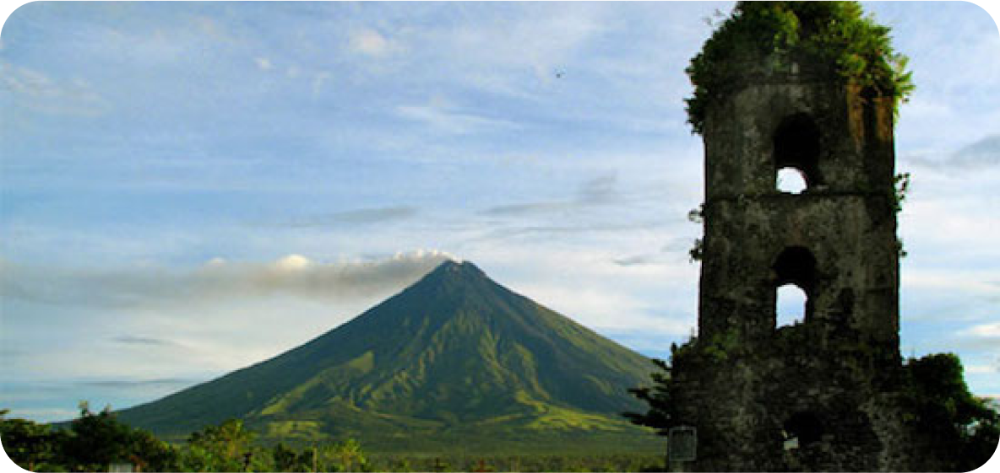

Travel Tips You Should Remember

Here are 12 tips you should remember if you want to travel to Albay
1. Plan and Research
• Research your destination to understand its culture, local customs, and any travel advisories.
• Plan your itinerary but leave room for flexibility.
2. Pack Smart:
• Pack light and bring versatile clothing.
• Don't forget essential items like chargers, adapters, and travel-sized toiletries.
3. Secure Important Documents:
• Keep your passport, tickets, and important documents in a secure and easily accessible location.
• Consider making digital copies in case of loss.
4. Stay Connected:
• Inform someone about your travel plans.
• Consider making digital copies in case of loss.
• Activate international roaming or get a local SIM card for your phone.
5. Health Precautions:
• Check if vaccinations are required for your destination.
• Carry a small first aid kit with essentials like bandages, pain relievers,
and any necessary prescription medications.
6. Money Matters:
• Inform your bank about your travel dates to avoid any issues with your cards.
• Carry a mix of cash and cards, and be aware of currency exchange rates.
7. Be Aware of Local Customs:
• Respect local customs and traditions.
• Learn a few basic phrases in the local language; locals appreciate the effort.
8. Stay Hydrated and Eat Wisely:
• Drink plenty of water, especially in warmer climates.
• Explore local cuisine, but be cautious with street food to avoid foodborne illnesses.
9. Safety First:
• Be aware of your surroundings and trust your instincts.
• Keep an eye on your belongings, especially in crowded places.
10. Explore Responsibly:
• Choose sustainable travel options and be mindful of your
impact on the environment.
• Follow the "Leave No Trace" principles when exploring nature.
11. Stay Informed:
• Keep up with local news and weather updates.
• Know emergency contact numbers and the location
of the nearest embassy or consulate.
12. Embrace the Unexpected:
• Travel often involves the unexpected.
Embrace the adventure and be open to new experiences.
Remember, these tips are very important if you want to enjoy travelling!